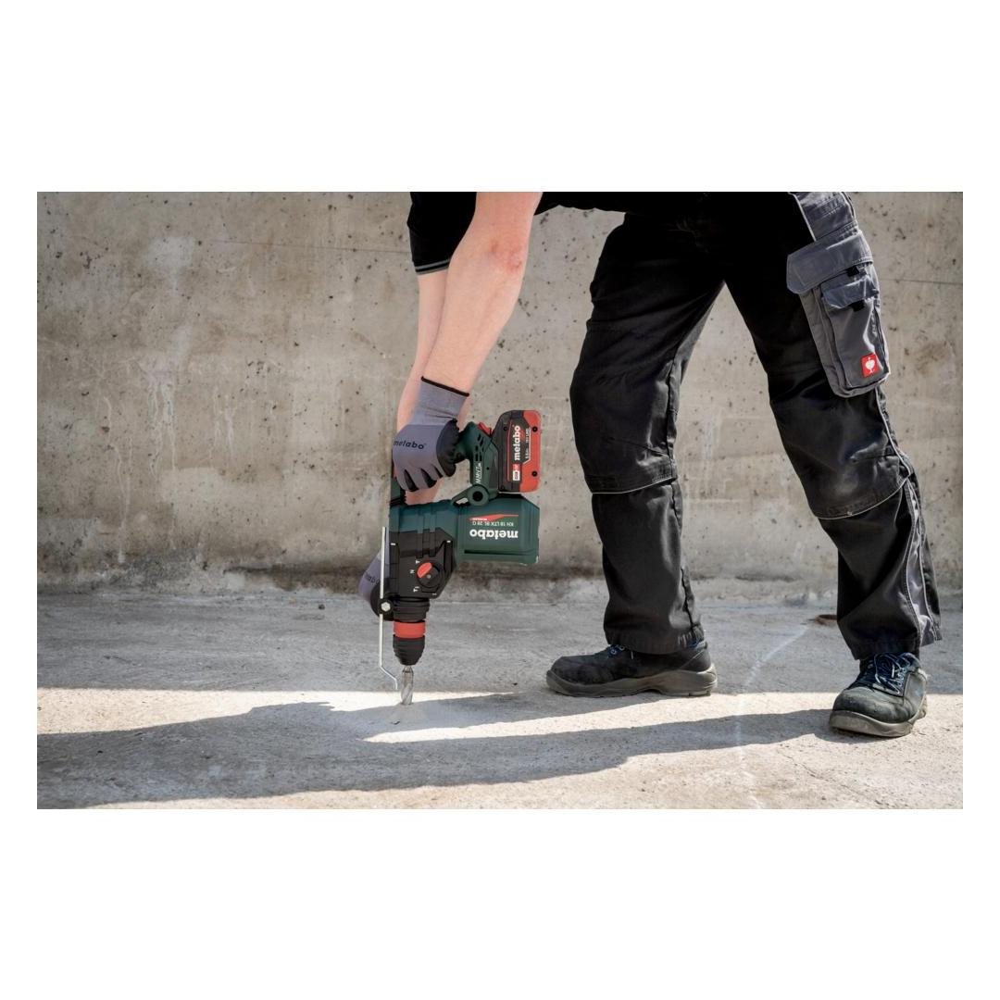
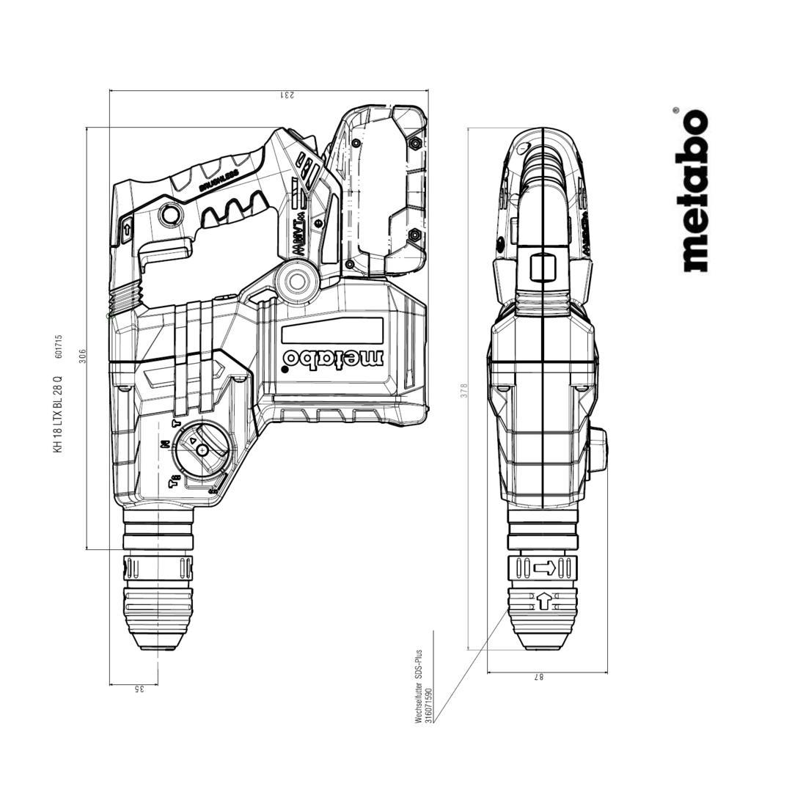
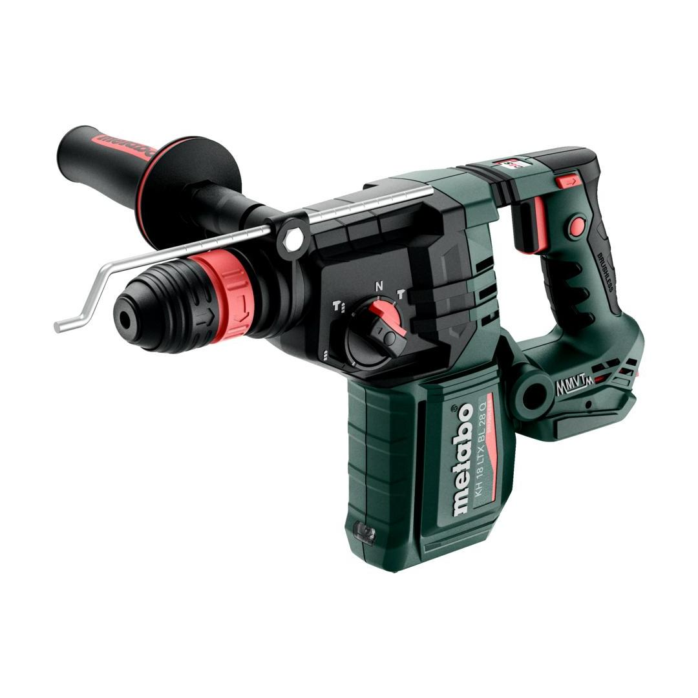
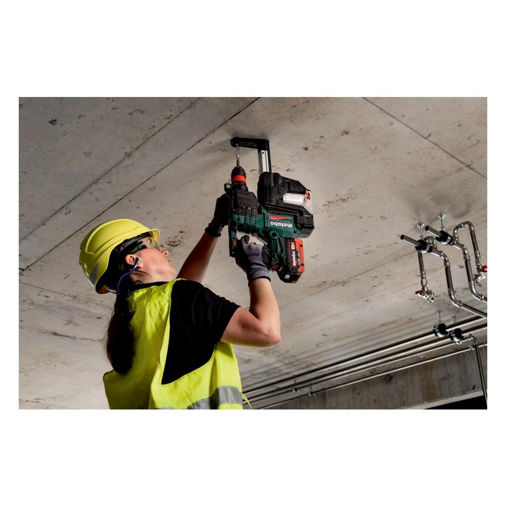

601745840







| Battery voltage | 18 V |
| Max. single blow energy (EPTA) | 3 J |
| Maximum impact rate | 4470 bpm |
| Drill-Ø concrete with hammer drills | 28 mm / 1 3/32 " |
| Tool holder | SDS-plus |
hammer drilling, drilling and chiselling
mechanical decoupling of the drive for safe working should the tool stop unexpectedly
play videoof bit retainer and accessory, ideal for alternating applications and providing maximum flexibility.
vibration damping for convenient continuous mode
for smooth start-up
Unique Metabo brushless motor for quick work progress and highest efficiency for any application
for working at customised speeds to suit the application material and speeds that remain almost constant, even under load
| Battery voltage | 18 V |
| Max. single blow energy (EPTA) | 3 J |
| Maximum impact rate | 4470 bpm |
| Drill-Ø concrete with hammer drills | 28 mm / 1 3/32 " |
| Drill-Ø masonry with core bits | 82 mm / 3 7/32 " |
| Drill Ø steel | 13 mm / 1/2 " |
| Drill-Ø soft wood | 30 mm / 1 3/16 " |
| No-load speed | 0 - 1000 rpm |
| Tool holder | SDS-plus |
| Weight without battery pack | 3.4 kg / 7.5 lbs |
| Hammer drilling concrete | 18.2 m/s² |
| Uncertainty of measurement K | 1.5 m/s² |
| Chiseling | 13.4 m/s² |
| Uncertainty of measurement K | 1.5 m/s² |
| Sound pressure level | 95 dB(A) |
| Sound power level (LwA) | 103 dB(A) |
| Uncertainty of measurement K | 3 dB(A) |
| Hammer chuck for tools with SDS-plus shank end |
| Keyless chuck for tools with cylindrical shank |
| rubber-coated side handle |
| Drilling depth guide |
| metaBOX 165 L |
| without battery pack, without charger |